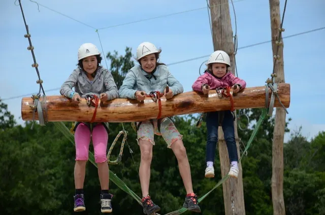
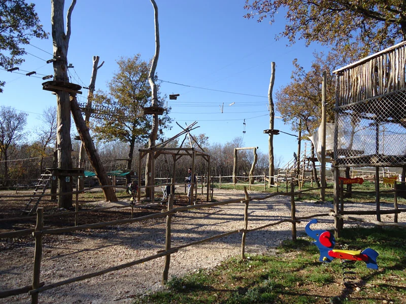

High Swing
Step off the platform and arc through the treetops on Glavani Park's 12.5-metre high swing. The ride combines height, speed, and a long pendulum swing that gives you time to take in the forest canopy before the gentle return.
Instructors secure your harness, explain body position and signals, and control each release. The high swing suits teenagers and adults who meet height requirements and is a favourite alongside the ziplines and catapult for a mixed-adrenaline day out.
What to expect on the High Swing
After your harness check you climb to the launch platform 12.5 metres above the forest floor. The swing releases you into a long pendulum arc through the oak canopy — a mix of weightlessness at the top of the swing and speed at the bottom. Instructors control each release and guide you back to the platform.
The high swing suits confident teenagers and adults. It is one of our most photographed attractions and works well as a first big thrill before moving on to the ziplines or Human Catapult.
Planning your visit
Glavani Park is at Glavani 10, Barban — about 30 minutes from Pula, 45 minutes from Rovinj and Rabac, and 50 minutes from Poreč. Free parking is on site. The park is open daily 9 AM–5 PM with last entry at 3 PM, so allow three to four hours for the whole park.
For High Swing and our other attractions you can book tickets online for groups up to 10 or call ahead for larger parties. See packages and prices — whole park from €70 per person, single activities from €30.
Safety and equipment
Every activity at Glavani Park is instructor-led. Equipment is CE-certified and checked daily. You receive a harness, helmet, and clear briefing before you start. Read more on our safety page.
Packages from €30 per person · book online for up to 10
Visitor photos — High Swing



High Swing video
The swing shown in this video is an earlier version. Our high swing has since been upgraded — today's ride is 12.5 m high.